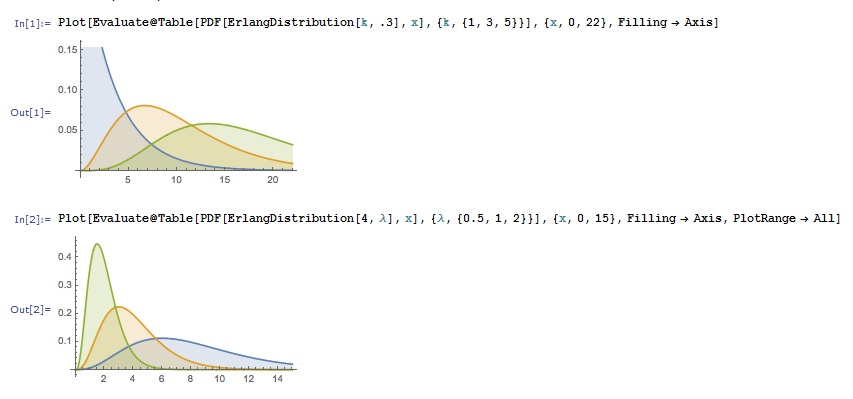

Erlang-fordeling Definisjon: Sannsynlighetsfordeling (Probability density function) f(x)=Erl(k, λ)(x)
Merk at Erlang-fordeling er for heltallige k :
i Mathematica
1. Innput
In[1]:= PDF[ErlangDistribution[k, λ], x]
Out[1]=
In[2]:= PDF[ErlangDistribution[k-verdi, λ-verdi], x-verdi]
Eksempel:
3. Definer valgfritt en eller flere k-, lambda- og x-verdier og tegn funksjonen.
In[4]:=Plot[Evaluate@ Table[PDF[ErlangDistribution[k, λ], x], {k, {k-verdi eller verdier}} ], {x, x- eller x-verdier}, Filling -> Axis]
eller ved
In[5]:=Plot[Evaluate@ Table[PDF[ErlangDistribution[k, λ], x], {λ, {λ-verdi eller verdier}} ], {x, x- eller x-verdier}, Filling -> Axis, PlotRange -> All]
Eksempel:
Eksempel med flere verdier:
for {k1=1, k2=3, k3=5}, λ=0.3, x1=0, x2=22 og for for k=4, {λ1=0.5, λ2=1, λ3=2}, x1=0, x2=15

Definisjon: Kumulativ sannsynlighet (Cumulative distribution function):
Beregning i Mathematica:
1. Skriv som innput
In[1]:= CDF[ErlangDistribution[k, λ], x]
Out[1]=
In[2]:= CDF[ErlangDistribution[k-verdi, λ-verdi], x-verdi]
Eksempel:
3. Plot grafen med en eller flere k-, λ- og x-verdier
In[1]:=Plot[Evaluate@ Table[PDF[ErlangDistribution[k, λ], x], {k, {k-verdi eller verdier}} ], {x, x- eller x-verdier}, Filling -> Axis]
eller ved
In[2]:=Plot[Evaluate@ Table[PDF[ErlangDistribution[k, λ], x], {λ, {λ-verdi eller verdier}} ], {x, x- eller x-verdier}, Filling -> Axis, PlotRange -> All]
Eksempel:
Eksempel med flere verdier:
for {k1=1, k2=3, k3=5}, λ=0.3, x1=0, x2=22 og for for k=4, {λ1=0.5, λ2=1, λ3=2}, x1=0, x2=15
Forventing (mean) og Varians (variance):
Definisjon:
Beregning i Mathematica:
1. Innput
In[1]:= Mean[ErlangDistribution[k, λ]]
In[2]:= Variance[ErlangDistribution[k, λ]]
2. Spesifiser verdiene
In[3]:= Mean[ErlangDistribution[k-, λ-verdi]]
In[4]:= Variance[ErlangDistribution[k-, λ-verdi]]
Eksempel: